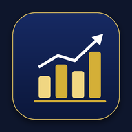

Income and Expense Tracker App for Small Business — offline, no subscription
This income and expense tracker is for freelancers, sole traders and small businesses that want a simple record of money in and money out. It records and summarizes; it is not tax software.
Get it on EtsyOne-time purchase. No subscription.
What it does
- Dashboard with This month and Year cards for income, expenses and net; personal entries are kept out of your net.
- Add income or expense entries with category, customer or vendor, payment method, business or personal, and a note.
- Attach a receipt photo; it is made smaller on your device and kept with the entry.
- Filter by period, type, category or search names and notes.
- Import a bank statement CSV: choose the columns, check the preview, and rows already in the app are skipped.
- Export entries as CSV for your accountant.
- Mileage log with distance in miles or kilometers and an optional rate you choose.
- Reports to print or save as PDF: monthly summary, profit and loss, by category, and mileage log.
- Up to five businesses, with your own categories.
How it works
- You buy it once on Etsy and download the file in a web browser (the Etsy phone app cannot download digital files).
- On a computer, you open the app file in your browser. On a phone, you open the app's web address in Safari (iPhone) or Chrome (Android) and choose Add to Home Screen (Android: Install app).
- Your data stays on your device. There is no account and no subscription.
- After the first load it works without internet.
- Languages: English, Spanish, French, German and Portuguese.
What it does not do
- It does not connect to your bank or payment apps; you import a CSV file yourself.
- It does not calculate tax or fill in tax forms, and does not suggest a mileage rate.
- It does not send invoices or take payments.
- No cloud sync and no team login. Move data between devices with a backup file.
Questions
Is this income and expense tracker a subscription?
No. You buy it once on Etsy. There is no monthly fee and no account.
Can I import my bank statement?
Yes, as a CSV file that you download from your bank. Files up to 2 MB and 3,000 rows are accepted, and the file never leaves your device.
Does it give tax advice?
No. It records and summarizes. Ask a tax professional about how to use your records.
Can I track more than one business?
Yes. You can set up to five businesses and switch between them.
Does it work offline?
Yes. After the first load it works without internet and keeps your records on your device.